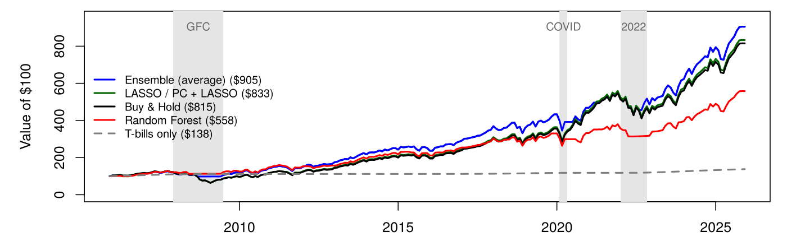

QUANTITATIVE RESEARCH · R
Can 121 macroeconomic indicators beat the historical average return, and can the forecasts be traded?
121
FRED-MD predictors
9 + 2
models + ensembles
1960–2025
monthly, 30-year rolling windows
1 · 3 · 6 · 12
month horizons
Qian Yunhan · team project with Lin Ruiyu, Liu Yiwei and Wilbert C. Kurniawan
THE QUESTION
1 · ACCURACY
2 · ECONOMIC VALUE
The historical mean is a notoriously hard benchmark: predictors that fit the past well rarely beat it on new data (Welch & Goyal, 2008). Dong et al. (2022) find predictive value when overfitting is controlled. This project tests that idea with a broad macro information set.
DATA
PREDICTORS
121
FRED-MD macro and financial series, made stationary with the FRED-MD transformation codes and lagged one month to avoid look-ahead. Current-month Mkt–RF is added.
TARGET
Mkt–RF
Compounded h-month market excess return over T-bills, built from Kenneth French’s Mkt–RF and RF series, for h = 1, 3, 6 and 12 months.
SAMPLE
792
Months from January 1960 to December 2025. Five incomplete series dropped; isolated gaps forward-filled before transformation.
FORECASTING DESIGN
1965
1995
2006
2025
First training window: 360 months
re-estimated every month, rolling forward
Validation
1995–2005
Test: 240 monthly forecasts
2006–2025, all reported results
MODELS
| Group | Models | Tuning (inside each window) |
|---|---|---|
| Benchmarks | Historical mean · Full OLS | none |
| Penalised regression | Ridge · LASSO · Elastic Net (α = 0.5) | λ by BIC |
| Dimension reduction | PC + LASSO (4 PCs) · PLS | BIC / validation RMSE |
| Tree ensembles | Bagging · Random forest | defaults, fixed seeds |
| Combinations | Equal-weight · Granger–Ramanathan | weights on validation |
Principal components are re-estimated within every window, and Granger–Ramanathan weights are constrained to be non-negative and sum to one, so no step uses information from the test period.
EVALUATION
FORECAST ACCURACY
TRADING STRATEGY
Robustness: every model re-run with four lags of each predictor (488 inputs).
FINDING 1 · ACCURACY
| OOS R² (%) | 1m | 3m | 6m | 12m |
|---|---|---|---|---|
| LASSO | +0.15 | −0.35 | +3.11 | +2.23 |
| Elastic Net | +0.10 | −0.32 | +1.18 | +3.33 |
| PC + LASSO | +0.15 | −0.35 | +3.12 | +2.23 |
| PLS | −33.3 | −46.4 | −23.3 | −8.6 |
| Random forest | −7.4 | −11.2 | −10.1 | −13.0 |
| Ensemble (equal) | −2.4 | −5.5 | −1.3 | +1.2 |
| Full OLS | −560 | −1,136 | −4,145 | −857 |
Best per horizon in orange. Ridge = 0.00 everywhere; bagging below −9%. At 3 months nothing beats the mean.
DIEBOLD–MARIANO VS MEAN
p ≥ 0.15
Best model at every horizon fails to beat the historical mean at the 10% level (p = 0.15–0.49).
Consistent with Welch & Goyal (2008).
FINDING 2 · OVERFITTING
−4,145%
Full OLS out-of-sample R² at 6 months: 122 unpenalised predictors fit noise.
0.00
Ridge at every horizon: BIC shrinks every coefficient to about zero, so the forecast is the mean.
97%
Share of 12-month windows where LASSO keeps any predictor, vs only 2% at 1 month.
At short horizons BIC almost always selects nothing, so the “model” is the historical mean. Only at 6–12 months do predictors survive, and that is where the small gains appear.
FINDING 3 · INTERPRETATION
| Elastic Net: kept in % of windows | % |
|---|---|
| 1-yr Treasury − fed funds | 93 |
| Mining & logging jobs | 75 |
| Building permits (Northeast) | 64 |
| 3-mo T-bill − fed funds | 55 |
| Unfilled durable orders | 53 |
| Random forest importance | %IncMSE |
|---|---|
| 1-yr Treasury − fed funds | 12.3 |
| 5-yr Treasury − fed funds | 12.0 |
| 10-yr Treasury − fed funds | 11.1 |
| Building permits (total) | 9.6 |
| Building permits (West) | 9.5 |
A linear and a nonlinear model agree: yield-curve spreads and housing activity carry the signal. Caveat: these spreads are very persistent (AR(1) 0.87–0.97) and 12-month returns overlap, so they can look more useful than they are.
FINDING 4 · TRADING

1-MONTH STRATEGY, 2006–2025
| Ensemble | Buy-hold | |
|---|---|---|
| $100 → | $905 | $815 |
| Sharpe | 0.75 | 0.65 |
| Max DD | 22% | 50% |
The most accurate models rarely forecast a negative return, so they stay invested and match buy-and-hold. Trees and PLS exit too often and lag. The equal-weight ensemble’s edge comes mainly from exiting during the 2008 crisis: one episode, not robust evidence.
ENGINEERING
RAW DATA
FRED-MD vintage and Fama–French files, versioned in the repo
PANEL
Transform, lag and build compounded targets with assertion checks
MODELS
One script per model fits each rolling window and caches forecasts
EVALUATION
One script rebuilds every metric, test, trade and chart
TAKEAWAYS
No model significantly beats the historical mean at any horizon, in line with Welch & Goyal (2008).
It removes OLS’s overfitting, but the safest forecast stays close to the mean.
Models minimise squared error, while the strategy only uses the sign of the forecast.
NEXT STEPS
Test over more downturns with real-time data vintages and publication lags; train for direction, or use a loss that penalises missed downturns.